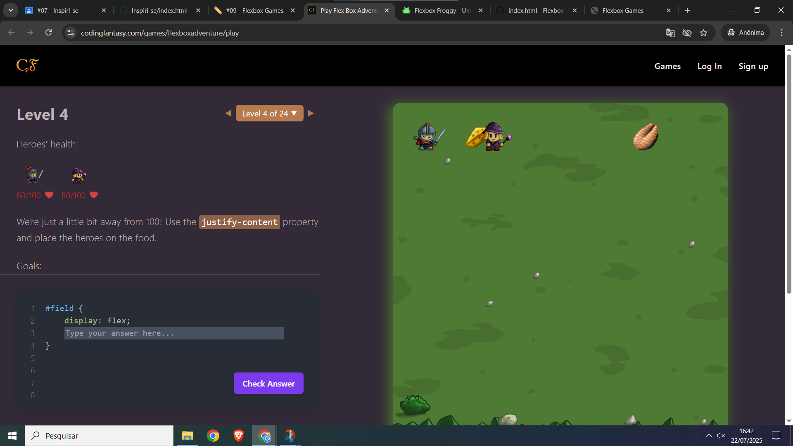
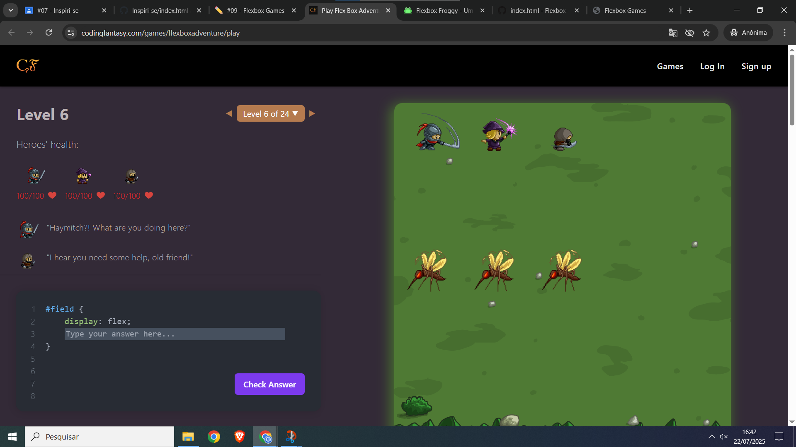
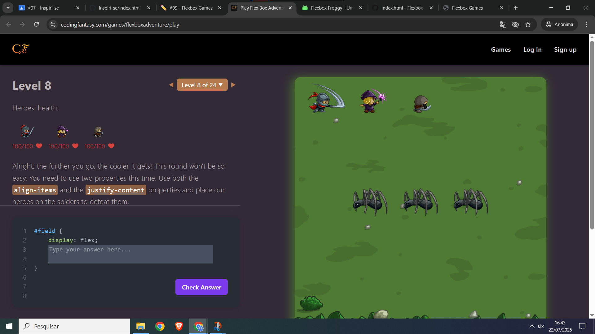
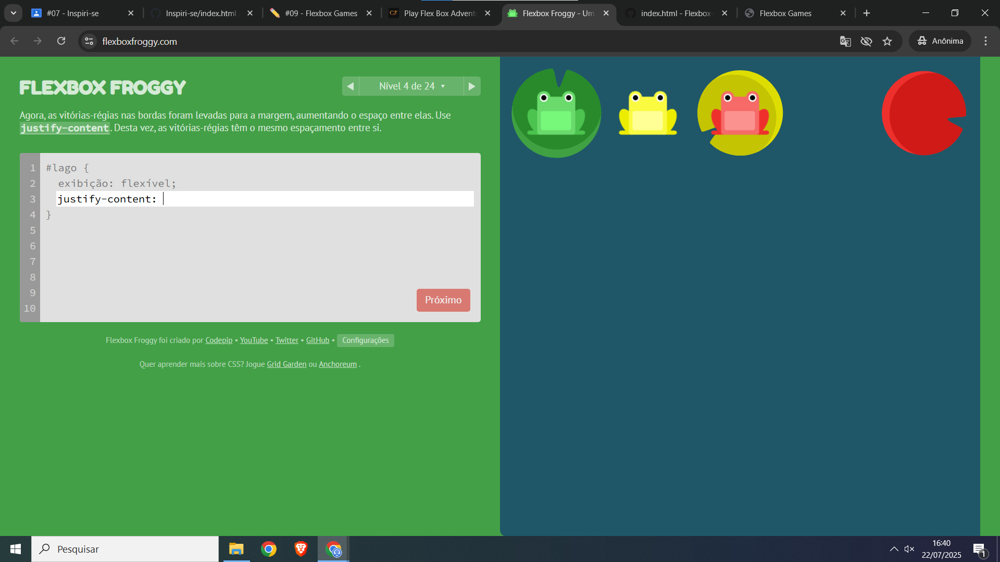
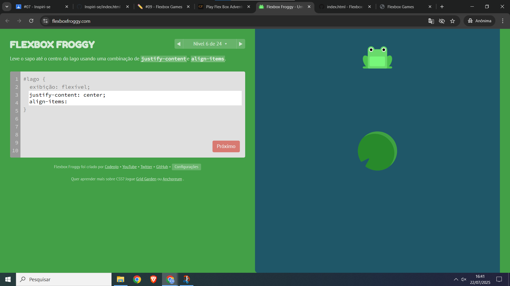
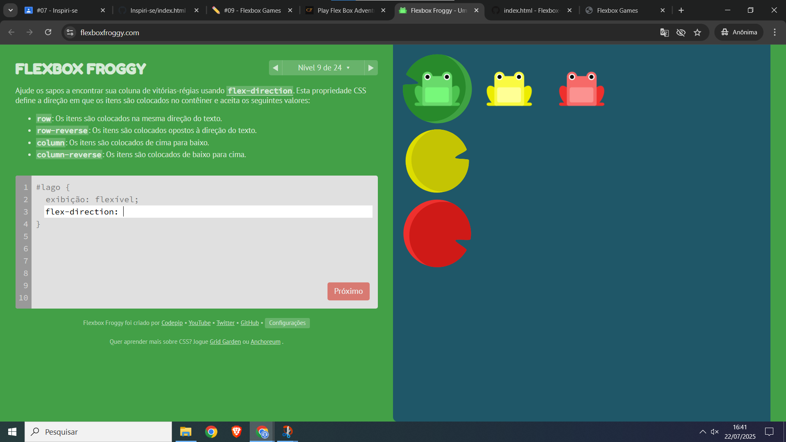

Jogo escolhido: Play Flex Box Adventure – CSS Game to Learn Flexbox
Link do site do jogo Saiba mais
Justificativa: Tive dificuldade porque havia uma propriedade que eu ainda não conhecia, o que causou problemas para realocar os bonecos.
Justificativa: A presença de uma propriedade desconhecida me trouxe dificuldades na hora de ajustar a posição dos bonecos.
Justificativa: Senti dificuldade em realocar os bonecos corretamente porque não tinha domínio completo das propriedades CSS que influenciam na realocação dos bonecos.
Jogo escolhido: Flexbox Froggy
Link do site do jogo Saiba mais
Justificativa: Durante o Flexbox Froggy, tive problemas para posicionar os sapos corretamente porque ainda estava aprendendo o comportamento dos seus alinhamentos.
Justificativa: A dificuldade surgiu ao tentar aplicar as propriedades do Flexbox de maneira correta para posicionar os sapos, já que o conceito de flex container e flex items ainda estava em desenvolvimento no meu entendimento.
Justificativa: Tive problemas no Flexbox Froggy ao tentar aplicar as propriedades corretamente para alinhar os sapos, pois as regras do Flexbox ainda eram novas para mim.
Propriedades ultilizadas:
- display: flex; Ativa o Flexbox no container, permitindo o uso das propriedades flexíveis.
- justify-content: flex-start; Alinha os itens no início do eixo principal (linha padrão: da esquerda para a direita).
- justify-content: flex-end; Alinha os itens no final do eixo principal.
- justify-content: center; Centraliza os itens no eixo principal.
- justify-content: space-between; Distribui os itens com espaços iguais entre eles, sem espaço nas extremidades.
- ustify-content: space-around; Distribui os itens com espaços iguais ao redor (entre e nas extremidades).
- flex-direction: row; Define o eixo principal como linha (padrão).
- flex-direction: row-reverse; Define o eixo principal como linha invertida (da direita para a esquerda).
- flex-direction: column; Define o eixo principal como coluna (de cima para baixo).
- flex-direction: column-reverse; Define o eixo principal como coluna invertida (de baixo para cim
Caso real:
Imagine um aplicativo de chat onde as mensagens aparecem em uma coluna vertical. Normalmente, as mensagens mais antigas aparecem no topo e as mais recentes embaixo. Se você quiser que o container comece mostrando a parte de baixo (as mensagens mais recentes), pode usar flex-direction: column-reverse;.
Como usar o Flexbox:
O container que envolve as mensagens recebe display: flex; e flex-direction: column-reverse;. Isso faz com que as mensagens sejam exibidas em ordem invertida — a mensagem mais recente aparece na parte inferior da tela (visualmente em cima, no fluxo de leitura). Quando uma nova mensagem é adicionada, ela aparece no "fim" da lista (visualmente embaixo), mantendo a ordem natural para o usuário.